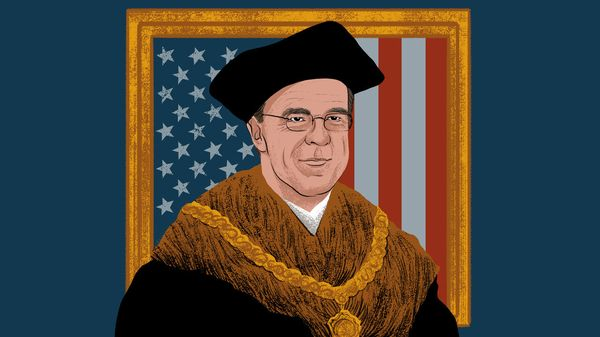

Jul 09, 2026 05:23 AM

TAKING HIS seat at a NATO summit must be a bittersweet moment for Mark Rutte, the alliance’s secretary-general. For among the 32 national leaders at the top table, several find the Dutchman insufferable.
It grates on some governments when Mr Rutte praises President Donald Trump and—far from rebuking him for calling NATO a “paper tiger” and demanding that members show him “loyalty”—thanks him for strengthening the alliance. Worse, Mr Rutte seems to enjoy playing Mr Trump’s enforcer a little too much. A former Dutch prime minister, he reminds some of a finger-wagging preacher when he scolds Europeans to spend more on their defence. Or while chiding them to avoid “empty” talk about deterring Russia without American help. Southern Europeans, in particular, remember lectures from Prime Minister Rutte to spend less. Now, as NATO boss, he wants them to borrow and rearm. Mr Trump calls Mr Rutte his friend and a man “respected all over the world”, setting colleagues’ teeth a-grinding once more.
Against that, Mr Rutte can be confident that many allies want him in the room. He soothes Mr Trump’s rages as few other Europeans can. Mr Rutte is willing to call Mr Trump “Daddy” and hail him as leader of the free world, if that stops America’s president storming out of summits like an angry old king.
Mr Rutte was at it again on July 6th at a press conference in Ankara on the eve of a potentially fraught NATO summit in the Turkish capital on July 7th and 8th. A reporter noted Mr Trump’s claims that European allies failed to support his war in Iran, and asked whether that might dampen the mood. Mr Rutte went big. With a straight face, he compared Mr Trump to Dwight Eisenhower, the former Supreme Allied Commander who defeated Hitler and was later elected president. In the secretary-general’s telling, after 60 years of trying, at last an American leader had matched Eisenhower’s powers of persuasion.
Now, due to a combination of Mr Trump’s “extremely forceful” leadership and the threat posed by Russia, NATO members are spending their fair share on defence. Mr Rutte added a tribute to Ukraine for taking the fight to Russia, leaving Vladimir Putin “desperate”. Yes, Mr Trump had shared his “disappointment” about the role played by some partners in the Gulf, he conceded. But actually almost 5,000 American planes flew sorties from Europe to support Operation Epic Fury. What is more, he enthused, Britain, France and other allies had announced their willingness to help defend shipping lanes in the Strait of Hormuz.
The performance helps explain why Mr Rutte inspires complex emotions among his peers. Alongside outlandish flattery for Mr Trump and a soothing acknowledgment of his impatience with allies, the Dutchman can be heard pushing back on current Trumpian obsessions, with the help of actual facts. Such praise-and-reality sandwiches are required. Diplomats relate that as recently as the G7 summit in June, Mr Trump greeted fellow leaders with a growling assertion that Ukraine was losing and that its war with Russia needed to stop, though he was talked down from this position by the end of the meeting. Lately, Mr Trump has been fulminating to all who will listen that Europeans tried to thwart his war with Iran. In search of scapegoats for his debacle in the Gulf, he exaggerates the extent to which allies imposed legal restrictions on bombing runs and missions over Iran.
Actually, Ukraine is doing well, Mr Rutte has told Mr Trump repeatedly, in both public and private. What is more, Europe provided lots of help in Iran, and is generally an indispensable platform for American power projection in the Middle East and beyond.
Other Western leaders and officials are aware that Mr Trump calls the Dutchman often, sometimes several times a day, to vent or consult him about his European peers. They are shocked, though, when Mr Rutte privately admits to rather liking Mr Trump, whose company he finds fun. Many allies are quietly livid with Mr Trump. Exhaustion is setting in among many governments, especially after America’s adventure in the Gulf wreaked havoc with their public finances. When European officials mutter about Mr Rutte’s obsequiousness, this is, in part, transferred resentment of America’s president, a man few dare to cross.
Mr Rutte’s sense of fun runs counter to lessons from history. Sir Thomas More, counsellor to King Henry VIII, an extravagantly vengeful English monarch, wrote that having the king’s ear is like playing with a tamed lion: a thrill until “he roars in rage for no known reason”, when “suddenly the fun becomes fatal”. More was eventually beheaded by his king. Though NATO bosses need not fear that fate, defenders of Mr Rutte say that he knows Mr Trump may turn on him one day, just as he has savaged such allies as Georgia Meloni of Italy and Britain’s Sir Keir Starmer. Until that day, he is convinced that it is objectively in America’s interest to preserve the alliance, and that Europe is not ready to defend itself. So he will do what it takes to keep Mr Trump onside.
Critics accuse Mr Rutte of blocking European efforts to plan for a post-American order. Supporters say that Mr Rutte opposes Europe openly working on its own defence structures because he fears they would hollow out NATO and make America’s departure a self-fulfilling prophecy. His is a big bet on America staying in the alliance. Without any planning, Europe would be vulnerable if America leaves. That said, his lion-taming buys Europe time to rearm. His readiness to defend reality also shows up the cowardice of Trump courtiers, many of whom slavishly endorse the president’s most absurd beliefs. If a mix of flattery and candour can stop Mr Trump from turning on Ukraine, or roaring out of the alliance, the shredding of Mr Rutte’s dignity is a small price to pay. ■
Subscribers to The Economist can sign up to our Opinion newsletter, which brings together the best of our leaders, columns, guest essays and reader correspondence.